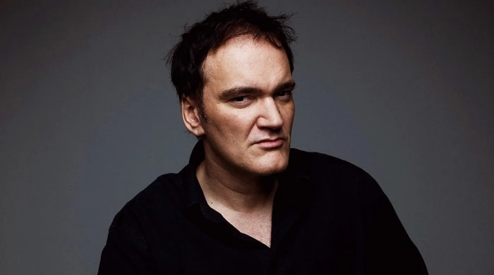
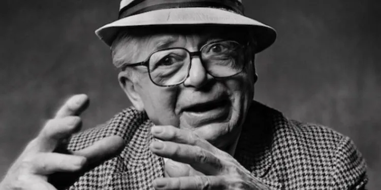

¿Qué es lo que hace un guionista?
Un guionista es la persona que se encarga de crear contenidos audiovisuales y plasmar estos contenidos a través de la escritura del guión. Entre las funciones de esta ocupación encontramos imaginar y describir personajes, tramas, escenarios y situaciones, diseñar diálogos y, en definitiva, crear un contenido atractivo para productos audiovisuales.
Sus tareas consisten en:
- Investigar las características del público al que se dirigirá el programa y los contenidos del tema que utilizará en el guión.
- Analizar los requisitos y las peticiones de producción (en caso de encargo) para la construcción de un relato audiovisual.
- Detectar el potencial narrativo de las diferentes fuentes que se pueden utilizar en la escritura audiovisual y plantear posibilidades de adaptación.
- Realizar la estructura del guión, escaleta o sinopsis.
- Redactar contenidos audiovisuales en general: construcción de narraciones y relatos para el cine, la televisión o la publicidad.
- Realizar los cambios necesarios en el guión a partir de estas sugerencias.
- Realizar reescrituras y ser capaz de renunciar a partes del guión que el propio guionista puede considerar indispensables pero que producción o realización consideren prescindibles.
- Adaptar guiones a novelas, obras de teatro o musicales para cine o televisión.
- Redacción del cuaderno con las sugerencias de audio y vídeo para la realización y el diseño audiovisual (secuencias, escenas, planos, movimientos de cámara y el montaje).


¿En qué consiste un guión?
Un guion cinematográfico es un texto escrito concebido desde su origen para transformarse en imágenes. De cualquier modo, el guion se halla más próximo a la imagen que a la forma escrita.
Su Estructura:
- Primer acto o planteamiento.
-
El guionista sitúa al espectador para hacerle entender de QUÉ trata la historia, QUIÉN la protagoniza y CÚAL es su premisa dramática. En la primera fase hay que enganchar a la audiencia; como cualquier espectador conoce, con mucha frecuencia los iniciales minutos de una película suelen determinar si nos gusta o no o, al menos, si nos interesa o no.
Los métodos de inicio de un relato audiovisual varían. Podemos encontrar emocionantes secuencias iniciales repletas de acción, presentaciones peculiares de los personajes, o simplemente la exposición de la situación y los personajes a un ritmo cadencioso.
El final del primer acto viene determinado por el primer nudo de la trama, un hecho que hace avanzar la historia mediante un giro, una situación relacionada directamente con la historia que la dota de una nueva perspectiva y obliga al protagonista a seguir adelante.
- Segundo acto o confrontación
- Se basa en el conflicto personal o psicológico y los obstáculos que lo producen. No hay historia si no hay impedimentos que interrumpan al protagonista alcanzar su meta. Estas dificultades componen la acción dramática de la historia. Lo que se denomina trama o desarrollo. El personaje tiene definido su objetivo y el espectador le acompañará en su trayecto para alcanzarlo.
- Tercer acto o resolución
-
El final de la historia está determinado desde un inicio por la causalidad narrativa. En otras palabras: el final debe completar y explicar la historia para dotarla de unidad. Si el guion es un trayecto, el guionista debe saber cuál es la estación de destino. Si se sabe a dónde se va, se puede elegir el modo. En caso contrario el escritor puede terminar deambulando sin rumbo y no llegar a puerto. El final ha de estar relacionado con el inicio pero dotándolo de otra perspectiva.
La mejor opción es el final cerrado, es la más habitual porque satisface mejor las expectativas creadas. La narración audiovisual es, ante todo, un negocio y para mantenerlo hay que complacer al público, no ofenderle o decepcionarle. Sin embargo, cada vez son más frecuentes los finales abiertos que dejan al espectador completar la propia historia.

Es mucho más que un trabajo, es un estilo de vida.
Ser guionista implica mucho más que solo escribir guiones. Según Tatiana Mereñuk, reconocida guionista se desempeña desde el 2000 como directora de contenidos y guionista en diferentes productoras audiovisuales y para producciones de distintos canales de televisión, en una entrevista en la que le preguntaron: ¿Qué tiene que tener un guionista para ser un “buen guionista”?, esto fue lo que respondió:
"Primero vocación, mucho deseo de contar historias y formación específica en el campo audiovisual. Ser una persona de que cada cosa que ve en la vida pueda armar un relato o una historia. La idea es poder generar expectativa y darle matices a esos relatos. Es muy importante tener una formación audiovisual amplia ya que somos los primeros que vemos la película. Los guionistas trabajamos con la imagen, no con el lenguaje."
Algunos guionistas famosos...
- Woody Allen
-
A los dieciséis años, Woody Allen comienza a enviar historias de humor a diferentes periódicos. Después de escribir varias obras para la televisión y numerosas crónicas para revistas como Playboy, en 1961 decide subirse al escenario. Y pronto empieza a recorrer algunos cabarets y platós de televisión.
El productor Charles K. Feldman se fija en él y le ofrece la posibilidad de escribir el guión de ‘¿Qué tal, Pussycat?’ (1965) y un año más tarde participa en el de ‘Casino Royale’. A partir de ahí despegaría su carrera profesional más reconocida por dirección. Pero no olvidemos que la gran mayoría de sus obras son escritas por él, además de colaborar escribiendo guiones para otros realizadores como Jean-Luc Godard y Paul Mazursky.
- Quentin Tarantino 
-
Quentin Tarantino pasó su juventud en un suburbio de Los Ángeles donde su pasión por el cine le llevó a trabajar en un video. Fue allí donde escribió sus dos primeros guiones: ‘Asesinos natos‘ y ‘Amor A Quemarropa‘.
Con el dinero que sacó de su venta financió su primera película, ‘Reservoir dogs’, que contó con Harvey Keitel desde el primer momento debido a que éste quedó encantado con el guión. En 1994, el estadounidense rueda ‘Pulp Fiction’, que rápidamente se convirtió en una película de culto para millones de espectadores y le ganó la Palma De Oro en Cannes consolidándose como uno de los mejores realizadores cinematográficos.
- Billy Wilder 
-
Antes de ser director, Billy Wilder trabajó muchos años como guionista. Contó muchas veces que se hizo director para evitar que otros destrozaran su obra. Cierto o no, si nunca se hubiese convertido en director, aún sería considerado hoy día como uno de los más grandes guionistas de los años treinta y cuarenta.
Periodista de bastante prestigio en la Alemania de los años veinte, viajó a Estados Unidos una vez Hitler se hizo con el poder. Buscando siempre la oportunidad de convertirse en director, aprendiendo todo lo que podía, pudo escribir guiones de la brillantez y el ingenio de ‘La octava mujer de Barba Azul’ y ‘Ninotchka’, ambas dirigidas por Ernst Lubitsch en 1938 y 1939, de quien era admirador y amigo. Pero también guiones para Raoul Walsh o Mitchell Leisen. Y para otro director a quien tanto admiraba, Howard Hawks, escribió el estupendo libreto de ‘Bola de fuego’ (1941).
- Leigh Brackett

-
Escribió algunos de los mejores westerns de la historia, concretamente para el gran Howard Hawks.
Novelista de éxito en el género de la ciencia ficción, Hawks insistió en que fuera ella quien escribiera ‘El sueño eterno’ (1946) junto nada menos que William Faulkner. Pese a este éxito, se mantuvo alejada del cine muchos años, hasta que volvió con Hawks y le regaló los guiones de ‘Río Bravo’ (1959), ‘El Dorado’ (1966) y ‘Río Lobo’ (1970), además de ‘Hatari!’ (1962). Por si fuera poco, es la responsable de la primera versión del guión de ‘El imperio contraataca’ (Irvin Kershner, 1980), que entregó poco antes de morir.
- Charlie Kaufman
-
Charlie Kaufman no es de los guionistas más originales y personales en muchos años de cine.
Surgió a finales de los noventa con ‘Cómo ser John Malkovich’ (Spike Jonze, 1999) y conoció varios años en que cada guión suyo era mejor y más sorprendente, hasta el que casi con toda seguridad sea su obra cumbre, ‘Olvídate de mí’ (‘Eternal Sunshine of the Spotless Mind’, Michel Gondry, 2004), que le valió el Oscar. Finalmente se hizo director con ‘Synecdoche, New York’ (2008). En los últimos años parece algo menos activo. Esperemos que no se haya agotado su genio.